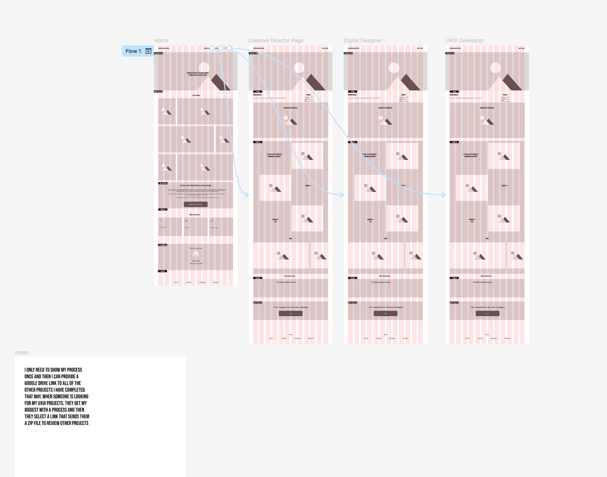

The purpose of the this site is to get hired, share projects, and network
The main audience includes
The site will include these pages:
FeaturesGoogle drive links to my resume, embedded videos, and photo carousels
This diagram shows how the pages are connected with some more planning information

Below is are my wireframes that I built in figma
W3Schools me simple and clear guidance at accomplishing the tast at hand. When you compare that to youtube videos, the clarity to answer questions will work out much better. Youtube is great, but it often gives answer in a context that isn't needed for the project I am looking to make. Therefore, it is just better to go through the course material. As a bonus, this will assist me in earning the certification in html and css from the website.
I have a lot of experience with Figma and this will be a good time to also use the UX research background I have for practice, even if it is just a shorter version. I am also working to obtain my Google UX Design certification from Coursera, so this will give me more time working on it for that course as well.
I would like to use the course materail as much as possible because I can then provide proper feedback at the end of the course. If the course material is subpar, then I will find something else and let the professor know through the proper channels for future students.